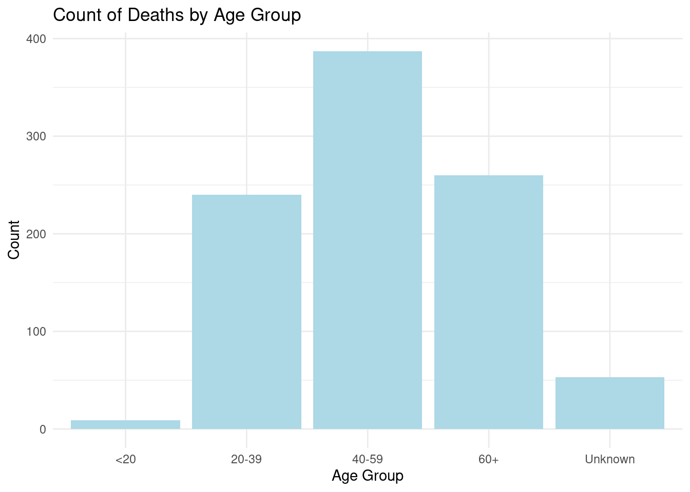
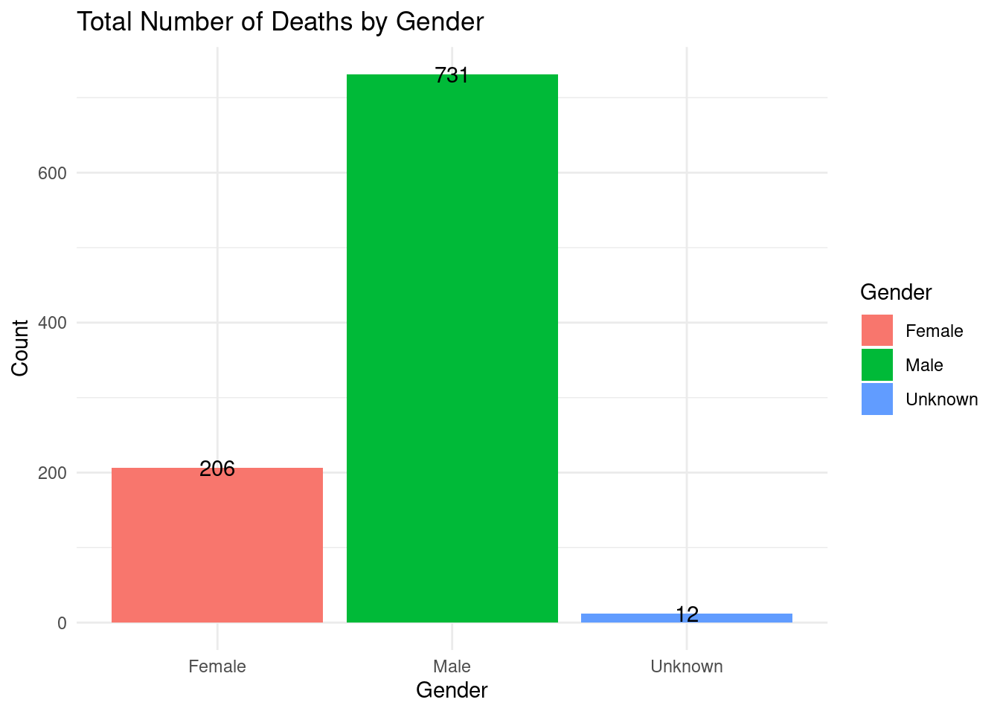
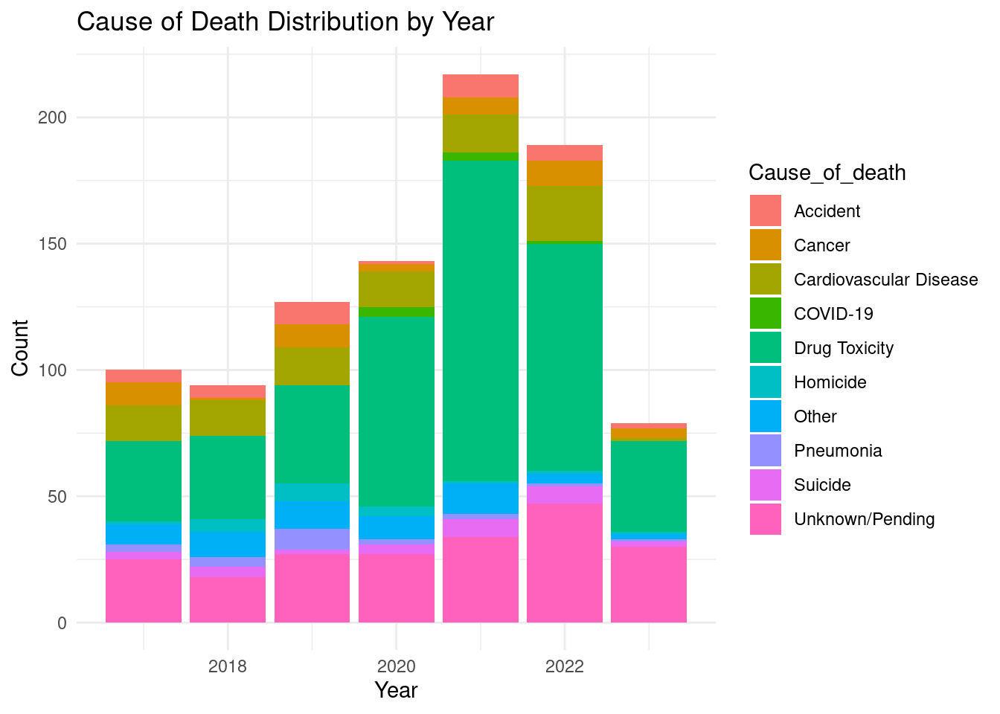

| Cause_of_death | Count of Death |
|---|---|
| Accident | 37 |
| COVID-19 | 8 |
| Cancer | 43 |
| Cardiovascular Disease | 95 |
| Drug Toxicity | 432 |
| Homicide | 20 |
| Other | 56 |
| Pneumonia | 21 |
| Suicide | 29 |
| Unknown/Pending | 208 |
Investigating the Cause of Homeless People’s Deaths in Toronto
Abstract
The death of homeless people in Toronto can be a concerning issue considering that they are already vulnerable because of their homelessness and thus exposed to very many dangers. Many factors contribute to the death of the homeless people in Toronto. This report aims to investigate the causes of death of homeless people in Toronto from 2017 to 2023. The study shows that drugs and toxicity are the leading causes of death among homeless people in Toronto. Covid-19 also had severe effects on the deaths of the homeless in Toronto. This finding suggests that drugs and toxicity should be handled with the highest swiftness in dealing with the deaths of homeless people in Toronto. The long-term effects of the pandemic on the life of the homeless in Toronto should also be investigated as the relevant stakeholders including the government take the appropriate measures to protect the lives of these vulnerable individuals.
Introduction
As one of the busiest and most modern cities in Canada, Toronto constantly hosts a large number of homeless people. As one of the cities in Canada with high standards, Toronto faces a growing homeless population. Reasons for homelessness are varied and can be a web of issues that include joblessness, mental health problems, addiction; family splits as well shortage of affordable housing. Homeless individuals have one of the greatest levels of vulnerability since they do not have any form of proper sheltering for their protection. Some of the most common causes of death among the homeless have been determined to be drug addiction. Despite their homeless conditions the death of the homeless still contributes excruciating pain to the families and a loss to the country (Canada 2023).
Toronto Public Health published data that showed that drugs and toxicity which often come from the unregulated supply in the city are two of the leading causes of deaths of the homeless in Toronto (Toronto 2023). With the help of statistical data analysis, it can offer insights on the ways to reduce this type of death of these vulnerable members of the Toronto society. This report investigates the homeless deaths in Toronto from 2017 to 2023. Then I discussed the possible implications of these visualizations. Table 1 shows that there were different causes of death of the homeless between 2017 and 2023. In Figure 1, a comparative analysis of the causes of death for each age group was explored. In Figure 2, I discussed about the distribution of death from males and females. About the The result from the datasets indicates that there were different causes of death including suicide and undetermined causes. However, as the Figure 3 shows, drug and toxicity was the leading cause of the deaths of homeless individuals in Toronto. More implications and further discussions on this result are presented in Discussion Section.
Data
Causes of Death among Homeless People in Toronto
To investigate the cause of death of homeless individuals in Toronto, I obtained the dataset from the Toronto Open Data Portal (Gelfand 2022). Provided by the Toronto Public Health, this dataset includes all causes of death of the homeless which occurred in Toronto between 2017 and 2023. For ethical reasons and the protection of the parties involved in the deaths, none of their personal information was disclosed.
This dataset contains 253 observations of death, noticing that one observation could contain more than one death, 6 variables regarding id, year of death, cause of death, gender, age group, and count. This report focuses on 5 of these variables except id. By using R (R Core Team 2023), and R packages “janitor” (Firke 2023), “tidyverse” (Wickham et al. 2019), “knitr” (Xie 2023), and “kableExtra” (Zhu 2021), an extract of the cleaned dataset is shown below.
Table 1 shows the total count of each cause of death. Variable “Cause_of_death” indicates that different causes of homeless people’s death, including “Accident”, “Cancer” ,etc. Variable “Count of Death” indicates the total count of death under this cause.
First, I want to conduct research on the causes of death, so I will not discuss variables such as age and year of death for the time being. Using this table, I can find that the number of deaths due to drug toxicity is significantly higher than other causes. In addition, as of today, there are still 208 cases of unknown death. It is not easy to comprehensively relieve these homeless people. Steer notes that if a death is considered “natural,” and the coroner is not involved (Webster 2017).
The Age Groups of Homeless People Who Died in Toronto

Figure 1 shows the number of homeless people dying by age from 2017 to 2023. We can find that most of the people who died are concentrated in the 40-59 range, the second largest age group is 60+, and only a small number of young people under the age of 20 died. But this is not something to be thankful for, every death is a tragedy, especially for those young children. It’s really, really unfair when someone dies an avoidable death as a teenager (Reporter 2023). It can be seen that survival will be particularly difficult for middle-aged and elderly homeless people. Considering their declining physical capabilities and Toronto’s cold winters (Romaszko et al. 2017), the government should give them more help.
The Gender of Homeless People Who Died in Toronto

Figure 2 shows the difference in the number of deaths by gender, as well as the specific number of deaths among men and women. From this we can conclude that female deaths account for approximately 21.707%, but this does not mean that the health status of female homeless people is worse. Good, because the total number of homeless men is greater than that of women, accounting for about 63% (Homeless 2021)of the total.
Cause of Death Distributed by Year
Before conducting further research, I have been interested in the impact of covid on the homeless. I previously thought that a large number of homeless people would die from covid, but Table 1 already shows the death toll. , which is far lower than my guess. I hope to have a deeper understanding of this phenomenon.

Figure 3 shows the annual death toll statistics from 2017 to 2013. It can be found that the overall number is increasing, reaching a peak in 2021, and then declining. In the covid epidemic, direct deaths from covid only exist from 2020 to 2022, and the number is far less than I guessed. But in fact, the impact of the epidemic is not limited to this. First of all, being infected with covid does not necessarily lead to death, but the subsequent sequelae, such as increasing the probability of cardiovascular disease and weakening lung function, will indirectly affect the health of homeless people, and often they do not have the conditions to go Get some effective diagnosis and treatment. In addition, under the conditions of the epidemic, the increase in the number of homeless people has also led to a shortage of social facilities, which has also made the situation of homeless people even worse (Baral et al. 2021).
I have also observed that the main reason for the increase in the death toll is the sharp increase in deaths and injuries caused by drug toxicity. A large portion of drug toxicity deaths stem from the toxic, unregulated drug supply. The use of highly potent opioids combined with unexpected substances is significantly increasing the risk of overdose in Toronto,” the city said in a Sept. 28 news release. These deaths are an example of the negative health impacts of the ongoing drug toxicity crisis.” Dr. Eileen de Villa, Toronto’s medical officer of health, pointed to “notable increases” in the number of unhoused people dying in the city during the pandemic (Joanna 2023).
Discussion
The analyzed data on death causes among homeless people in Toronto show obvious patterns and trends. Although the exact numbers and counts are not given, the percentages and distributions help in generating an understanding of what challenges homeless folks face today with possible impacts on public health policy. An examination of the results in Figure 3 shows that the drug and toxicity were the leading cause of death of the homeless in all the years. Cardiovascular death is the main cause of mortality among homeless people, accounting for a significant proportion of overall deaths. It is, therefore, important to tackle these underlying health concerns that affect the homeless population for enhanced general well-being. Among the most notable outcomes is that deaths caused by drug toxicity are widespread. This category is a particularly significant contributor to homeless mortality, highlighting problems with substance abuse within this group. These implications far exceed just health concerns because addiction, mental health, and the availability of rehab are also involved. This result alerts us about the safety and security of homeless people, they are at risk out there in public places. Policymakers and social services should address these safety concerns so that a healthy environment is created for the homeless to ensure their security. A significant decrease in mortality rates could be achieved by initiatives related to preventive care, health screenings, and substance abuse treatment. Cooperation of health care providers and shelters will enable the homeless to obtain appropriate, timely medical care for chronic disorders.
The findings showcase the complicated connection between housing stability and health outcomes. Some of the difficulties associated with homelessness feed into cardiovascular diseases, drug toxicity, and other health problems. Affordable housing solutions and housing supportive programs should therefore be financed to directly address the causes of these health inequalities. The high prevalence of drug intoxication underscores the urgent need for mental health and substance abuse support services. Customized interventions such as counseling, addiction treatment, and harm reduction strategies are a cornerstone to reducing mortality for homeless who abuse substances. Homicide as a cause of death requires attention to safety measures and community integration. Since policies encourage secure environments, action against violence and effective community policing can ensure a safer environment for the homeless. Furthermore, initiatives aimed at introducing homeless people to the community through job and social services can improve their quality of life. Measures should be taken to reduce the rates of drug abuse among the homeless in Toronto. The government and other NGOs could come up with programs that help not only in housing them and increasing security to reduce the homicidal cases among them to also to rehabilitate them, from drugs and toxic substances WHO and the Public Health of Toronto must further study the issues. After the impact, how to re-improve social security measures is also an issue worthy of serious consideration.
References
Baral, Stefan, Andrew Bond, Andrew Boozary, Eva Bruketa, Nika Elmi, Deirdre Freiheit, S. Monty Ghosh, et al. 2021. Seeking Shelter: Homelessness and Covid-19. https://www.facetsjournal.com/doi/10.1139/facets-2021-0004.
Canada, CBC/Radio. 2023. City Data Shows 110 Unhoused People Died Last Year in Toronto Homeless Shelters. https://www.cbc.ca/news/canada/toronto/deaths-of-shelter-residents-2022-toronto-1.6721890.
Firke, Sam. 2023. Janitor: Simple Tools for Examining and Cleaning Dirty Data. https://github.com/sfirke/janitor.
Gelfand, Sharla. 2022. Opendatatoronto: Access the City of Toronto Open Data Portal. https://sharlagelfand.github.io/opendatatoronto/.
Homeless, Canadian Observatory on. 2021. Toronto | the Homeless Hub. https://www.homelesshub.ca/community-profile/toronto.
Joanna, Lavoie. 2023. Deaths Among Toronto’s Unhoused People Still Trending High with Drug Toxicity Crisis to Blame. https://toronto.ctvnews.ca/deaths-among-toronto-s-unhoused-people-still-trending-high-with-drug-toxicity-crisis-to-blame-1.6582282.
R Core Team. 2023. R: A Language and Environment for Statistical Computing. Vienna, Austria: R Foundation for Statistical Computing. https://www.R-project.org/.
Reporter, Victoria Gibson Affordable Housing. 2023. In Toronto, More Than Three Homeless People Died on Average Every Week Last Year, New Data Shows. https://www.thestar.com/news/gta/in-toronto-more-than-three-homeless-people-died-on-average-every-week-last-year-new/article_87fa515b-f774-5161-bba7-266b788a5572.html.
Romaszko, Jerzy, Iwona Cymes, Ewa Dragańska, Robert Kuchta, and Katarzyna Glińska-Lewczuk. 2017. Mortality Among the Homeless: Causes and Meteorological Relationships. https://journals.plos.org/plosone/article?id=10.1371%2Fjournal.pone.0189938.
Toronto, City of. 2023. Toronto Public Health Releases 2022 Data for Deaths of People Experiencing Homelessness. https://www.toronto.ca/news/toronto-public-health-releases-2022-data-for-deaths-of-people-experiencing-homelessness/.
Webster, Paul. 2017. Bringing Homeless Deaths to Light. https://doi.org/10.1503/cmaj.1095399.
Wickham, Hadley, Mara Averick, Jennifer Bryan, Winston Chang, Lucy D’Agostino McGowan, Romain François, Garrett Grolemund, et al. 2019. “Welcome to the tidyverse.” Journal of Open Source Software 4 (43): 1686. https://doi.org/10.21105/joss.01686.
Xie, Yihui. 2023. Knitr: A General-Purpose Package for Dynamic Report Generation in r. https://yihui.org/knitr/.
Zhu, Hao. 2021. kableExtra: Construct Complex Table with ’Kable’ and Pipe Syntax. http://haozhu233.github.io/kableExtra/.